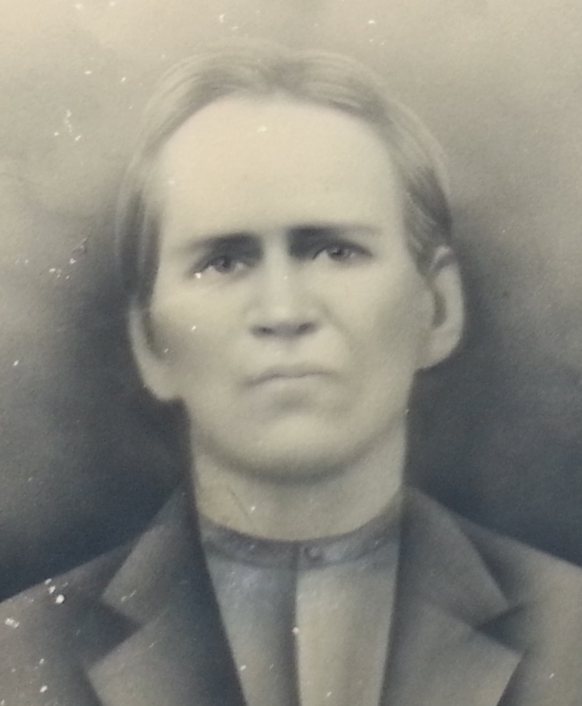

Jacob Burl Cannaday
About 1822 – 16 January 1895
Cannaday line · Trap Hill, Raleigh County, West Virginia
Profile status: SUPPORTED
Quick Facts
Born
About 1822, Virginia SUPPORTED (the year: 1850 census age 28, 1870 age 48, 1880 age 58, death record age 72 at 16 January 1895, and the memorial all agree on 1822. The day is open — 22 July (old compiled account, Patrick County) against 27 July (Clark 1988, read directly, which states no birthplace at all) — and the county is unproved: Patrick leans, since his father moved there in 1818, while “Franklin County” appears in no compilation read. No civil birth record can exist — Virginia did not record births civilly before 1853)
Died
16 January 1895, Marshes, Raleigh County, West Virginia, age 72 DOCUMENTED (West Virginia death record: “Jacob B. Canady”, buried 18 January 1895, Canady Cemetery. The old compiled account’s “6 January 1892” is contradicted)
Married
Ellender Cannaday, licence 11 October 1841, Franklin County, Virginia
DOCUMENTED (marriage bond image: Jacob B. Canaday and Joshua Canaday bound $150; consent note 10 October 1841 signed William Canaday — consent only, not fatherhood; bride written “Elinder Canaday”; no minister’s return. The ceremony, 21 October 1841 by Michael Howry, is reported only)
Occupation
Farmer DOCUMENTED (1870 census: farming, personal estate $125, no real estate listed; 1880 census: farmer. No record makes him a blacksmith or timberwright — the trade ran in the extended family)
Military
No service record found DOCUMENTED (National Park Service Civil War Soldiers & Sailors index searched under every spelling variant, both sides — no Jacob B. Canaday record exists in the index. The index is not exhaustive, so the negative is “no record found in the index,” not proof he never served. No pension)
Buried
Canaday Cemetery, Glen White, Raleigh County, West Virginia SUPPORTED (death record + memorial 128500144. No stone photo exists for him on Find a Grave — his memorial’s only photo is a framed portrait)
Residence
Trap Hill / Marshes, Raleigh County, West Virginia SUPPORTED (censuses 1870 and 1880. He moved from Virginia about 1857 — his son Constantine’s obituary says the family came to West Virginia when Constantine was about one year old — and Riffe places a Glen White settlement in 1858)
Name
“Burl”, not “Burwell” SUPPORTED (his son William Jacob’s 1927 death record names the father “Burl Canady”; Riffe and the compilations write “Burwell”. Records give “Jacob B. Canaday”, “Jacob B. Canada” (1870), and “Jacob B. Canady” (death record); the roster spelling is “Cannaday”)
Immediate Family
Parents
William “Billy” Cannaday ×
Martha “Patsy” Wright SUPPORTEDCompiled consensus only, not proved: two independent compilations read directly (Clark 1988 via Putman; Agee 1989) agree Jacob is Billy × Patsy’s son, and the 1850 census puts Jacob’s young household (family 223) immediately next to William and Martha’s (family 222) — neighbourhood, not parentage. No primary record names Billy as Jacob’s father. Akers (1953) names only five of Billy’s 24 children and does not name Jacob at all. The 1841 consent note signed William Canaday proves consent to the marriage only, not fatherhood. The full conflicts are in Research Notes.
Spouse
Ellender Cannaday (born about 1822–1828; died 25 May 1898), licence 11 October 1841, Franklin County, Virginia
DOCUMENTEDHis only wife. The ceremony, 21 October 1841 by Michael Howry, is reported only — no minister’s return has been seen. Her birth year and her parents are unproved; her death register names only her father “J. Canaday” and her mother “E.”
Children
Jesse B. Cannaday (born 28 March 1845, Franklin County; died 17 March 1891)
SUPPORTEDPleasant B. “Pled” Canaday (born February 1848, Franklin County; died 18 July 1920, Cedar, Raleigh County; married Christina)
SUPPORTEDVirgil C. Cannaday (born 20 January 1849, Patrick County; died 28 February 1868)
UNPROVEDWilliam Jacob Canaday (born 15 August 1852; died 21 January 1927, Beckley; married Marinda Celia Lilly 2 September 1878)
DOCUMENTEDConstantine Monroe Canaday (born 12 January 1856, Patrick County; died 12 July 1934, Tolleys; married Sallie Ann McGhee 1889)
SUPPORTEDMalinda Frances Canaday Thompson (born 22 July 1863; died 23 January 1947, Glen White; married Rev. James P. Thompson)
DOCUMENTEDRebecca Jane Canaday Thompson (born 1 April 1865; died 18 July 1939, Glen White; married James Richard Mattison “Ritchie” Thompson 1888)
DOCUMENTEDIsaac Owen “Ike” Canaday (born 9 September 1870; died 28 January 1921, Surveyor; married Martha Elizabeth Hall 4 December 1889)
DOCUMENTEDEight children, census-verified; William Jacob is the direct line. FamilySearch IDs: Jesse B. KZTB-TGY; Pleasant B. LH3L-LD3; Virgil C. 9C8X-K68; William Jacob LHRC-XSD; Constantine Monroe 2Z3C-878; Malinda Frances K21B-7T7; Rebecca Jane KP4M-TDJ; Isaac Owen L44S-WW8. Four more names appear on the trees only and are not carried here as verified children: Sarah Elizabeth (born 1854), Jacob B. (1852–1868), Pop Adaway (born 1858), Daniel C. (1866–1867) — all UNPROVED, and Pop Adaway is absent from the complete 1870 household. FamilySearch adds two more unproved names, Asa Millard (born 1860, 9C8X-KF9) and Pepe B. (born 1871, MCZ9-48C). “Crook-Neck Bill” is William Jacob himself, not a second son. “Genetta Ella” is the granddaughter Genettie Ellen (born 6 February 1885), William × Marinda’s daughter, not a daughter of this couple. Geni links eleven children, including the tree-only names, and omits Jesse B. and Rebecca Jane, both census-verified here.
Siblings
Nancy Cannaday (born 8 December 1808)
SUPPORTEDMary “Polly” Cannaday Hall (twin, born 5 June 1810; married John Randolph Hall)
SUPPORTEDJames B. Cannaday (twin, born 5 June 1810)
SUPPORTEDElizabeth Cannaday (born 1811)
SUPPORTEDWilliam Cannaday (born September 1812)
SUPPORTEDFlemming Cannaday (born 2 February 1816)
SUPPORTEDDelilah Cannaday (born 19 November 1816)
SUPPORTEDJoshua Cannaday (born 24 January 1818)
SUPPORTEDConstantine Cannaday (born about 1820/1821)
SUPPORTEDSusannah Cannaday (born about 1821)
SUPPORTEDPleasant Cannaday (born 1824; married Deborah Hall 4 September 1849)
SUPPORTEDRandolph Cannaday (born 27 December 1827)
SUPPORTEDMarshall Patterson Cannaday (born 29 January 1830)
SUPPORTEDJohn Cannaday (married 12 November 1840)
SUPPORTEDMartha Cannaday (married 10 December 1835)
SUPPORTEDStephen Cannaday (born 1831)
SUPPORTEDFull siblings by the compiled rosters (Clark 1988; Agee 1989), which agree on the names above but differ in order and in details. Seven more children died young or unnamed (Granville, Thomas, Ira, Mahala, Hessie, and two unnamed) — the 24 total is compiled tradition, not a counted fact. Geni shows 26 siblings with some different names (Catherine, Ferdinand, Hester) — the sibling roster is compiled, not proved. Fleming S. Cannaday (born 30 June 1834, died 17 February 1862, Confederate service documented at index level) is not in the compiled rosters; his place as Jacob’s brother is UNPROVED. No sibling has a profile page, so no sibling name is linked here.
On Family Tree Sites
Life Timeline
About 1822 · age 0
Born, Virginia SUPPORTED (the year; the day, 22 or 27 July, and the county, Patrick or Franklin, are unproved)
11 October 1841 · age 19
Licence and bond to marry Elinder Canaday, Franklin County, Virginia DOCUMENTED (bond image; consent note signed William Canaday)
1850 · age 28
Census, Patrick County, Virginia: Jacob B. 28, Elenor 22, Jesse B. 4, Pleasant 2, Virgil C. 1 DOCUMENTED (image read; next door, William and Martha Canaday)
About 1857 · age 35
Moved to Raleigh County, West Virginia SUPPORTED (his son Constantine’s obituary; Riffe places a Glen White settlement in 1858)
18 July 1860 · age 38
Census, Wyoming County, Virginia: Jacob 37, Ellenor 35, Jesse B. 14, Pleasant 12, Virgil 11, Jacob B. 8, William J. 7, Constantine 4 DOCUMENTED (image read; found by the signed-in pass — the dig had searched Patrick, Raleigh, and Fayette without finding it)
16 August 1870 · age 48
Census, Traphill Township, Raleigh County: Jacob B. 48, Ellenor 40, Wm 18, Constantine 14, Malinda F. 7, Rebecca J. 4 DOCUMENTED (image read, full roster)
1880 · age 58
Census, Trap Hill, Raleigh County: Jacob 58, Elender 58, Constantine M. 24, Malinda F. 16, Rebecca J. 14, Isaac O. 9 SUPPORTED (transcription)
16 January 1895 · age 72
Died, Marshes, Raleigh County DOCUMENTED (death record; buried 18 January 1895)
Burial
Canaday Cemetery, Glen White, Raleigh County SUPPORTED
Life Story
Jacob Burl Cannaday was born about 1822 in Virginia, the son — by compiled consensus, not by a primary record — of William “Billy” Cannaday and Martha “Patsy” Wright. He married Elinder Cannaday on licence of 11 October 1841 in Franklin County, Virginia, and eight children are verified by the censuses: Jesse, Pleasant, Virgil, William Jacob, Constantine, Malinda, Rebecca, and Isaac. He farmed, first in Patrick County, Virginia, and from about 1857 at Trap Hill and Marshes in Raleigh County, West Virginia, where he died 16 January 1895, aged 72.
The censuses trace the household: 1850 in Patrick County, with his young family next door to William and Martha Canaday; 1860 in Wyoming County, Virginia, with six sons at home — a household the dig had searched three counties for and the signed-in pass found; 1870 at Traphill, read from the image in full, with William still at home at 18; 1880 at Trap Hill, with the four youngest children. The move to Raleigh County falls about 1857, bracketed by his son Constantine’s obituary and the children’s birthplaces — Constantine born in Virginia, Malinda in West Virginia.
His parentage rests on compilation, and the page says so plainly. Clark (1988) and Agee (1989) both place Jacob among Billy × Patsy’s children, and the 1850 census puts his household beside theirs — but no deed, will, Bible record, marriage record, or death record names Billy as his father, and Akers (1953), the third compilation, names only five of Billy’s 24 children and leaves Jacob among the nineteen unnamed. Billy’s 24 children are compiled tradition; only one twin pair, James and Mary, born 5 June 1810, is identified with a shared birth date. Billy’s second marriage, to Nancy Hill in September 1857, overlaps his first wife Patsy’s carried death that December — one of the two dates is wrong, and neither has been proved.
No service record has been found for Jacob on either side of the Civil War, and no record makes him a blacksmith or timberwright. The home-front heroics the old account gives him — hiding livestock, camouflaging trails, guarding passes — have no record support at all: the setting is real (Union soldiers burned the McDonald home at Trap Hill, and bushwhackers murdered men nearby in 1863 and 1864), but nothing ties any of it to Jacob. His son William Jacob carries the line, marrying Marinda Celia Lilly in 1878; their daughter Genettie Ellen is Jacob’s granddaughter, not his daughter as the old account had it. Jacob is buried in the Canaday Cemetery at Glen White. His framed portrait is the only known image of him — no stone photo exists.
Sources and Evidence
- West Virginia death record, “Jacob B. Canady,” 16 January 1895, Marshes, Raleigh County, age 72, buried 18 January 1895, Canady Cemetery — image read via the West Virginia Archives link on his memorial DOCUMENTED
- Franklin County, Virginia, marriage bond, 11 October 1841 — Jacob B. Canaday and Joshua Canaday bound $150; consent note 10 October 1841 signed William Canaday; bride written “Elinder Canaday”; no minister’s return (FamilySearch film 1977997, images 626–629) DOCUMENTED
- 1850 census, Patrick County, Virginia, M432, North District, 30 September 1850, household 220/223 (FamilySearch ark M8DJ-YPY; film 004206389, image 150 of 176): Jacob B. 28, Elenor 22, “Jepe B.” 4, Pleasant 2, Virgil C. 1, Patr Foley 20F; family 222 next door: William 67, Martha 67, Randolph 22 DOCUMENTED
- 1860 census, Wyoming County, Virginia, 18 July 1860 (FamilySearch ark MHM7-TX2): Jacob B. Cannada 37, Ellenor 35, Jessee B. 14, Pleasant J. 12, Virgil F. 11, Jacob B. 8, William J. 7, Constant M. 4 DOCUMENTED
- 1870 census, Traphill Township, Raleigh County, M593 roll 1698, leaf 318 = stamped page 402 (image read): Jacob B. 48, Ellenor 40, Wm 18, Constantine 14, Malinda F. 7, Rebecca J. 4 DOCUMENTED
- 1880 census, Trap Hill, Raleigh County (transcription, read in the dig): Jacob 58, Elender 58, Constantine M. 24, Malinda F. 16, Rebecca J. 14, Isaac O. 9; the elder Jesse B. Cannaday, 85, next door is a different, older man SUPPORTED
- Find a Grave memorial 128500144, Jacob Burl Cannaday (read directly): born 1822, died 16 January 1895, burial Canaday Cemetery, Glen White; biography SUPPORTED
- Find a Grave memorial 128500144, photo 1 (image read): framed head-and-shoulders portrait of a man in a dark jacket, added by Nancy Horton Gillispie, 18 April 2014 SUPPORTED
- Death certificate of William Jacob Canaday, 21 January 1927, Beckley, cert. No. 1220 (image read): father “Burl Canady”; mother’s maiden name recorded as not known; informant his son Lundy Canaday DOCUMENTED
- Clark, “The Cannaday Family” (1988), via Putman (read directly): Billy × Patsy’s children; Jacob entry (born 27 July 1822, married Elenor October 1841, died 16 January 1895) SUPPORTED
- Agee, “The Cannadays” (1989), pp. 15–17 (read directly): Jacob B. as the 12th of 24 children; Billy × Patsy’s roster SUPPORTED
- Akers, “Genealogy of the Canady Family” (1953), pp. 97–98 (read directly): Billy × Patsy, 24 children, only five named — Jacob is not among them SUPPORTED
- WikiTree, Jacob Cannaday (Canaday-169) (read live): parents, wife, twelve children; only records cited are the 1850 census and memorial 128500144 SUPPORTED
- WikiTree, William Patrick Cannaday (Canaday-170) (read live): Billy, born about 18 September 1781, died about 11 July 1874; 7 November 1835 Short deed ($29, 29 acres, Smith River); enslavement counts 5 (1820), 10 (1850), 9 (1860) SUPPORTED
- Riffe, “Early Settlers of Raleigh County” (1950): “CANNADY, Burwell — A Floyd Countian, he settled near Glen White in 1858” SUPPORTED
- Obituary of Constantine Monroe Canaday, Raleigh Register, 13 July 1934 (read directly from the memorial photo): born 12 January 1856, Patrick County; “came to West Virginia with his parents when he was about one year old”; died 12 July 1934, Tolleys SUPPORTED
- Obituary of Malinda Frances Canaday Thompson, Raleigh Register, 23 January 1947, p. 8 (read directly): “the daughter of Burl and Eleanor Cannady”; born 22 July 1863, died 23 January 1947 SUPPORTED
- Death certificate of Rebecca Jane Canaday Thompson, July 1939, Reg. No. 11046 (image read): born 1 April 1865; father Burl Canady, mother Elenor Canady; died 18 July 1939 DOCUMENTED
- Raleigh County marriage transcription: “Hall, Martha Elizabeth 22 Patrick to Isaac Owen Cannady 19 Raleigh s/o Jacob/Eleanor 4 Dec 1889” — names Jacob and Eleanor as Isaac’s parents explicitly SUPPORTED
- National Park Service, Civil War Soldiers & Sailors index (search summary): no Jacob B. Canaday service record, either side, under any spelling variant; the index is not exhaustive, so the negative is “no record found in the index” DOCUMENTED
- National Park Service, Civil War Soldiers & Sailors index: Fleming S. Cannaday, 30th Battalion, Virginia Sharpshooters, Company B, Musician in, Private out DOCUMENTED
- Geni profiles, read live 9 November 2026: Jacob 6000000002978097241; Billy 6000000003478788957; Patsy 6000000001728362584; eleven linked children (Pleasant B. 6000000002955912731, William Jacob 6000000150899452893, Jacob B. 6000000002974372742, Virgil C. 6000000152339620958, Sarah Elizabeth 6000000002974525559, Constantine Monroe 6000000152339977840, Pop Adaway 6000000152339663973, Virgil F. 6000000002974615004, William “Bill” Crook-Neck 6000000002974656141, Malinda 6000000189448789844, Isaac 6000000189449073822) SUPPORTED
- FamilySearch, read live 9 November 2026: Jacob LZQM-BRN (26 sources); Ellender LZQM-YS4 (23 sources); William Jacob LHRC-XSD; fourteen children with IDs SUPPORTED
- Ancestry, Tricia’s tree 44342901, read signed in 9 November 2026: Jacob 6189633934; “Mary Canaday” 6189633935; William Jacob 6189636679 SUPPORTED
- Patrick County, Virginia, will-book testator index (876 lines, read in full): no Cannaday, Canady, or Canada entry — Billy’s will, negative at index level only DOCUMENTED
- USGenWeb Raleigh County free wills transcription, 1850–1900: no Canady testator DOCUMENTED
- Franklin County, Virginia, 1850 census transcription (USGenWeb, searched in full): no Foley entries at all, and no adult Pleasant Canady in the county DOCUMENTED
- C. M. Cannaday, “Cannady family tree” (archive.org, full text read): a different, Indiana-based line; its Eleanor (born 1817) is not Ellender DOCUMENTED
Grades: DOCUMENTED an original record says it · SUPPORTED several records point to it · FAMILY ACCOUNT the family’s own telling · UNPROVED a lead, not proved.
Research Notes and Open Questions
- Grades: DOCUMENTED means an original record read directly says it; SUPPORTED means several records point to it; FAMILY ACCOUNT means the family’s own telling; UNPROVED means a lead, not proved. Every fact on this page carries its grade.
- Birth day and county (C1): the old account gives 22 July 1822, Patrick County; Clark gives 27 July 1822 with no birthplace stated; Geni takes 22 July 1822, Patrick County; FamilySearch takes 27 July 1822, Franklin County. The day and the county are UNPROVED. Patrick leans only because his father moved there in 1818; “Franklin County” appears in no compilation read and looks like an inference. Virginia recorded no civil births before 1853, so no birth record can exist.
- Death date, corrected (C2): the old account’s “6 January 1892” is CONTRADICTED by the death record, 16 January 1895, Marshes, age 72.
- Marriage dates (C5): the licence and bond, 11 October 1841, are DOCUMENTED from the bond image. The ceremony, 21 October 1841 by Michael Howry, is UNPROVED — reported only, no minister’s return has been seen. The couple’s document gives “24 February 1842” for the marriage; that date is UNPROVED against the licence and is not printed here as the marriage date. The consent note signed William Canaday proves consent to the marriage only, not fatherhood.
- Parents, SUPPORTED not proved: two independent compilations read directly (Clark 1988 via Putman; Agee 1989), the WikiTree consensus, and the 1850 census putting Jacob’s household immediately next to William and Martha’s all point the same way — and no primary record names Billy as Jacob’s father. Akers (1953) names only five of Billy’s 24 children and does not name Jacob at all (C18).
- Billy’s children, 24 against 22 (C15): 24 is SUPPORTED as compiled tradition; 22 has no source. Only one twin pair is identified with a shared birth date — James and Mary, both born 5 June 1810 (C16). Billy × Patsy married about 1804 (Agee) against about 1817 (WikiTree) — UNPROVED (C13). The lore that Billy × Patsy were both 12 when they married is CONTRADICTED as fact — Agee presents it as family legend, and it is arithmetically impossible against the compiled dates.
- Nancy Hill overlap (C14): Billy married Nancy Hill 11 September 1857, SUPPORTED — yet Patsy’s carried death is 28 December 1857. One of the two dates is wrong; which one is UNPROVED. The remarriage is CONTRADICTED as a clean remarriage on the carried dates.
- Billy’s will, a genuine negative (C19): the Patrick County will-book testator index, all 876 lines read in full, has no Cannaday, Canady, or Canada entry. The negative is index-only — it does not prove intestacy: the will could sit under a variant spelling, in another county, or the index could be incomplete, and the index’s coverage and date range were not verified.
- Enslavement: Billy’s counts — 5 in 1820, 10 in 1850, 9 in 1860 — are SUPPORTED as WikiTree citations only; the schedules themselves have not been read, and the Chris Cannaday and Mose Canada profiles have not been opened. Nothing ties Jacob himself to enslaved people on any record read.
- Military (C20): no service record for Jacob exists in the National Park Service index, either side, under any spelling variant — a DOCUMENTED negative at index level, and the index is not exhaustive. Jesse B.’s Confederate service rests on Riffe alone and has no index support — UNPROVED. Fleming S. Cannaday’s Confederate service is DOCUMENTED at index level (30th Battalion, Virginia Sharpshooters, Company B; Musician in, Private out), but “Flem” as Jacob’s brother is UNPROVED — three Flemings are now distinguished: Fleming born 1816 (Billy × Patsy’s son), Fleming S. born 1834 (the soldier, died 17 February 1862 at Clarksville, primary-level UNPROVED), and Greenville “Green” Cannaday.
- No blacksmith or timberwright: no record gives Jacob either trade, and the home-front heroics the old account gives him — hiding livestock, camouflaging trails, guarding passes — have no record support at all. The setting is verified (Union soldiers burned the McDonald home at Trap Hill; bushwhackers murdered men nearby in 1863 and 1864), but nothing ties any of it to Jacob.
- Children, 8 verified plus tree-only names (C24): Sarah Elizabeth (born 1854), Jacob B. (1852–1868), Pop Adaway (born 1858), and Daniel C. (1866–1867) are UNPROVED — they appear on the trees only. Pop Adaway is absent from the complete 1870 household, a meaningful negative (C31); Sarah Elizabeth is absent too (C32). FamilySearch adds Asa Millard (born 1860) and Pepe B. (born 1871), both unproved. “Crook-Neck Bill” is William Jacob himself, not a second son. “Genetta Ella” is the granddaughter Genettie Ellen, born 6 February 1885 to William × Marinda, not a daughter of this couple.
- Geni’s roster differs from the verified one: Geni links eleven children, including the tree-only names Sarah Elizabeth, Jacob B., and Pop Adaway, and omits Jesse B. and Rebecca Jane, both census-verified here. Geni also lists two Virgils (Virgil C. and Virgil F.) and a separate “Crook-Neck” William stub — duplicates recorded only, not merged.
- 1860 household, found (C6, resolved): the signed-in pass found the household in Wyoming County, Virginia, 18 July 1860 (FamilySearch ark MHM7-TX2) — Jacob 37, Ellenor 35, and six sons. The dig’s verified negatives in Patrick, Raleigh, and Fayette counties stand; Floyd County was never tested — and the household was in Wyoming, not Floyd.
- 1880 William Jacob household (C11, resolved): the image re-read shows only Wm. J. 27, his wife Marinda C. 26, and daughter Roberta L., 7 months (FamilySearch ark M6T7-5RK). The dig’s roster — Martha E. 4, Wm E. 2, John 4/12 — is CONTRADICTED as his household; it may belong to a different Wm. J. Canada household. The 1900 census corroborates the five-child roster.
- William Jacob’s birth day (C37): FamilySearch gives 14 August 1852 (seven sources); the dig, Ancestry, and the memorial give 15 August 1852. His stone reads 1853 on both photos (C7) against the records’ 1852. The page carries 15 August 1852 with both variants stated.
- Child-date conflicts, new (C38/C39/C41): Constantine’s birth day is 12 January 1856 (dig and his obituary, read directly) against 14 January 1856 on Ancestry. Rebecca Jane’s dates are 1 April 1865 – 18 July 1939 DOCUMENTED (death certificate image read); Ancestry carries two Rebecca profiles, 1865–1910 and 1866–1939, neither matching. The 1860 census place is Wyoming County on the FamilySearch image read directly; Ancestry gives “Western District, Pulaski, Virginia” — the image wins.
- Obituary survivors (C30): William Jacob’s obituary (Beckley Post Herald, Saturday 22 January 1927, p. 1, read directly) says he was survived by his son Lundy Canaday and two daughters, naming only Mrs. C. S. McKinney. The roster has Londa Everet (a daughter) not Lundy, and Genettie married Wesley Matthew McKinney — the initials differ from “C. S.” This is UNRESOLVED.
- The couple’s document differs: it gives Jacob born about 1815–1818 in Floyd County, against the trees’ about 1822; it gives the marriage as 24 February 1842; and its children roster names William “Billy” (born 1834), John J. (1868), and Emily J. (1865), with George, Louisa, Sarah J., and Henry as tree-only names — none of those names appear in the censuses read. The pages carry the dig and addendum roster; the document’s claims are noted here, not adopted. The document is never edited.
- Land and wills, a genuine negative: no deed, will, or estate record has been found for Jacob or Ellender in any free source. The Raleigh County deed and will indexes were sign-in blocked, and the FamilySearch catalog attributions in the dig are unverified from crawled text — verify before citing.
- Spelling (C23): the roster spells the family “Cannaday” and the wife “Ellender”; the records give “Canaday,” “Canady,” “Canada,” and for her “Elenor,” “Elinder,” “Elinda.” The roster spellings govern the page titles.
- Tree checks, signed in 9 November 2026: Geni — Jacob 6000000002978097241, Ellender 6000000152338994879; FamilySearch — Jacob LZQM-BRN (26 sources), Ellender LZQM-YS4 (23 sources); WikiTree — Jacob Canaday-169, Billy Canaday-170; Ancestry, Tricia’s tree — Jacob 6189633934; Find a Grave — Jacob 128500144.
- Still open: the 1840 census has not been searched; the Patrick County 1850 census “Patr Foley” test was blocked by a connection failure; the 1890 veterans schedule has not been read; Fleming S. Cannaday’s Compiled Service Military Record has not been read; James P. Thompson’s stone dates are unresolved (25 April 1861–25 July 1944 against 7 April 1865–25 July 1943); Constantine’s burial place is open (his obituary says Lester; the memorial says Glen White); and the second Ellender profile on Find a Grave (manager Hicks) is unverified.